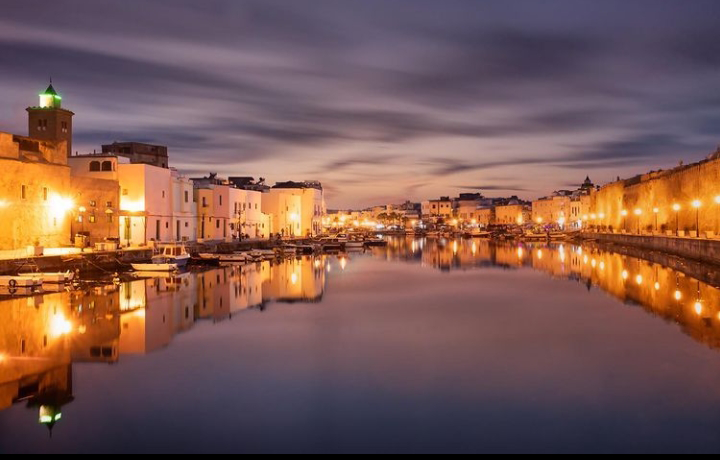

Bizerte

Informations
Bizerte is the northernmost city in Africa, located 65 km (40mil) north of the capital Tunis. It is one of the oldest known settlements in Tunisia, having been founded by settlers from the Phoenician port of Sidon around 1100 BC. Although archaeologists have established that no Phoenician settlements in the West Mediterranean date to before the 9th century bc.